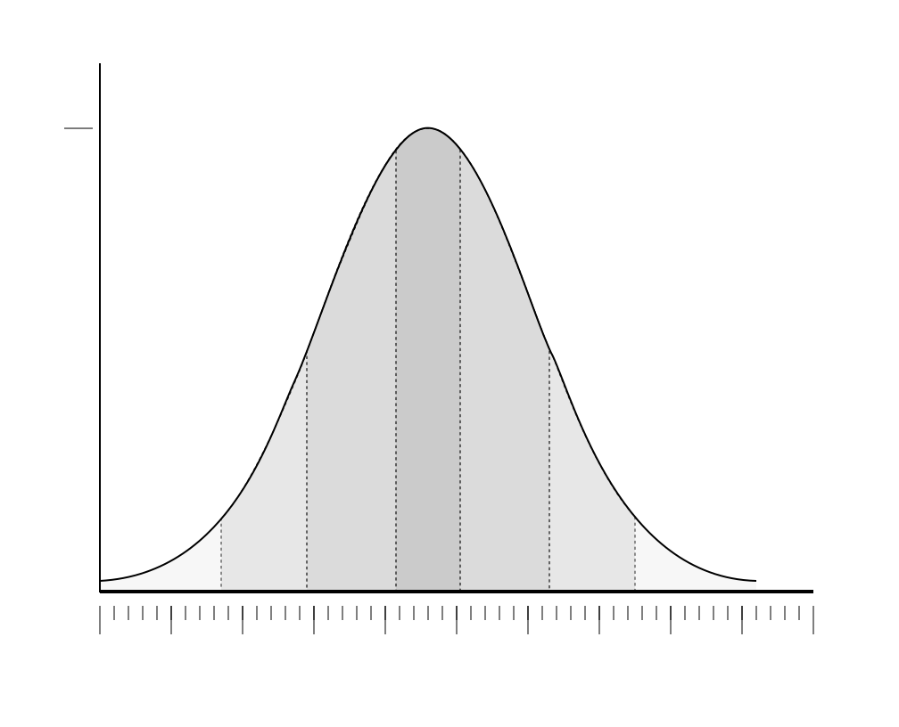

Sideways Stats

Primer on probability curves
Sideways Type I and Type II errors
Interaction of alpha and beta
Impact of sample size
Impact of effect size

When “not significant” is not failure

Checking an upper-bound hypothesis

Freeman.blue – Main page